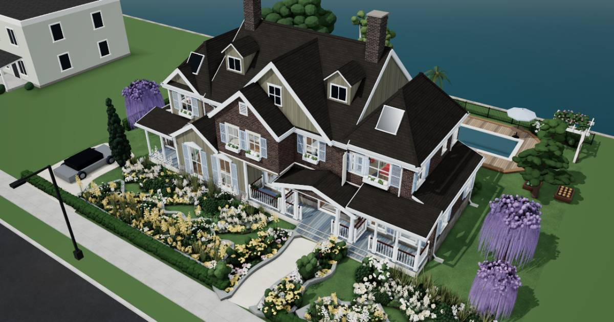

Fictional family. Real software.
Thirty-six homes. Each family's life, on one Companion Core.
Sally's planner, John's code, Steve's games, Jean's homework. The Brennan family keeps all four on the one Companion Core in the house. Take the tour to see which Companion Hub store app does each job, and which cloud service it replaces.
Every home has a Companion Core in it. Take a tour to find it.
Companion OS is in beta.
- Homes
- 36
- Square metres of floor
- 8,310

Meet the families
Home style and storeys
No families match. Try fewer words, or clear the filters.
The list of homes did not load. Check the connection and try again.
Meet the Companion Core.
The small computer on your desk runs your own AI, apps and memory at home, not in someone else's cloud.
Companion OS is in beta.